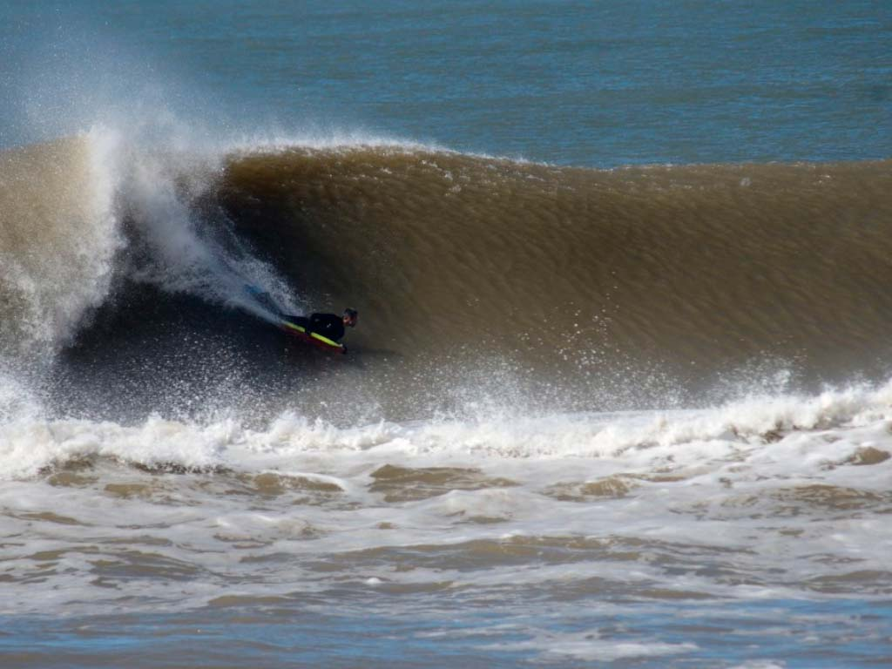

SURF EN LA PALOMA
La zona de La Paloma, en Rocha, se destaca como una de las principales en la costa de Uruguay para practicar surf. El balneario tiene un cabo que se adentra en el Océano Atlántico, lo que hace, que su ubicación geográfica sea la más favorable para los diferentes vientos y oleajes que llegan a sus picos, permitiendo practicar el surf en una u otra playa a una distancia relativamente corta entre un lugar y otro. Casi 10 kilómetros de playas surfistas, olas para todos los gustos; desde El Gavilán, la derecha de Corumbá, derecha e izquierda en Los Botes, derecha e izquierda en Zanja Honda, la izquierda de La Balconada, hasta La Aguada con La Farola, El Murito y El Mirador.
CAMINATA VALIZAS CABO
Uno de los paseos más representativos, tanto al visitar Barra de Valizas como Cabo Polonio, es la caminata entre los balnearios. Desde veranos ya lejanos, la travesía es un clásico para toda aquella persona que visite una de estas dos localidades, y es una oportunidad única para presenciar la riqueza natural de la fauna marina y el paisaje semidesértico que domina en las dunas móviles que separan (o unen) ambos destinos.

EN CAMION AL CABO
Las antiguas rutas por las que circulaban los colosos fueron delimitadas nuevamente cuando el Gobierno nacional declaró las dunas de Cabo Polonio Monumento Natural. A fin de cuidarlas, se estableció una ruta que va rodeando los médanos hasta el cabo. El camión es escalonado y los jóvenes, parados en la parte superior, ríen y disfrutan de la emoción que da la velocidad del camión -que en realidad no va excesivamente rápido, pero levanta una enorme nube de arena tras de sí- y la perspectiva de estarse introduciendo en tierra salvaje, el sabor de la aventura. Entre quienes van sentados en el centro reina un ambiente de camaradería; todo el mundo está encantado con la belleza de la naturaleza.